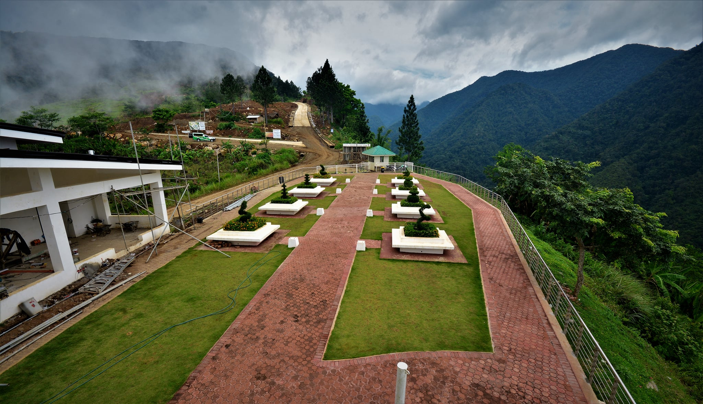
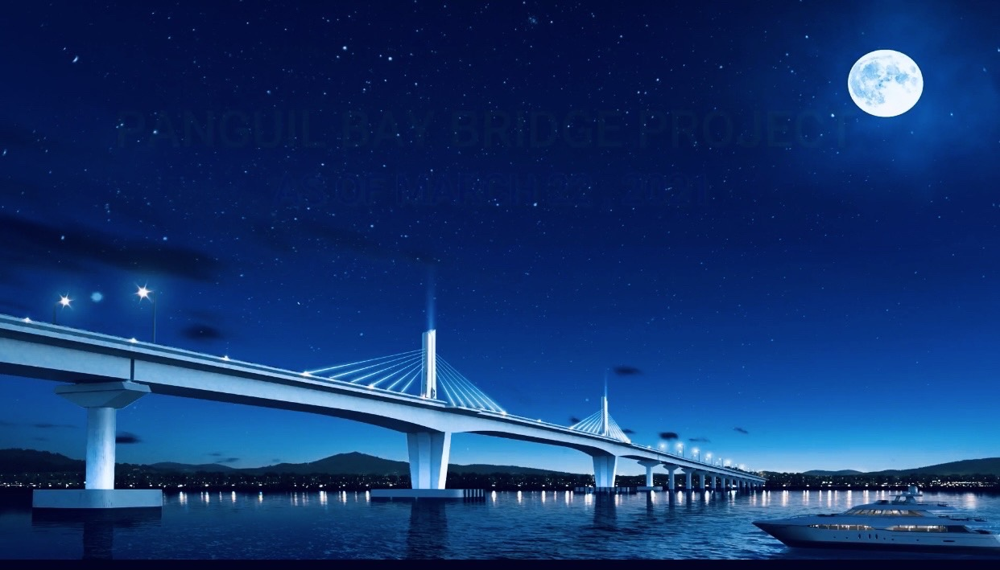

Tangub City's 3 Famous Tourist Spots

Hoyohoy View Deck
Click picture to view description

Highland Stone chapel
Click picture to view description

Panguil bay bridge
Click picture to view description